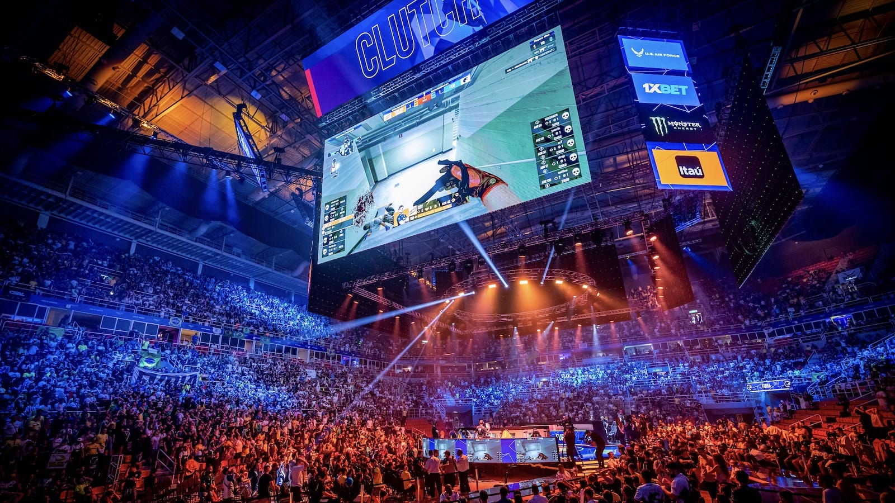
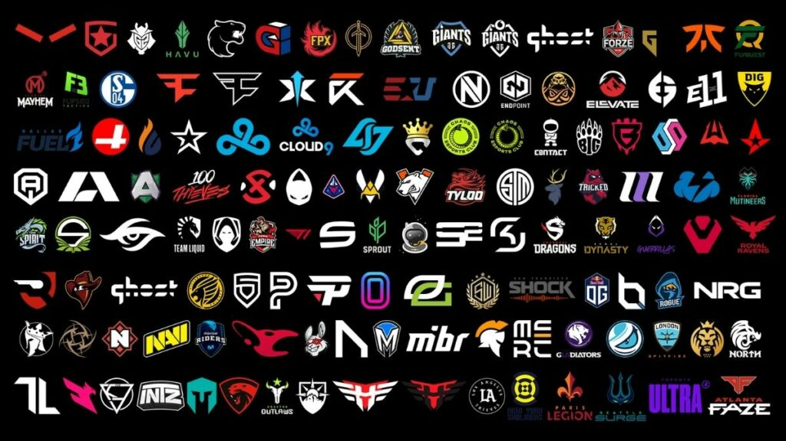

Az e-sport kezdete az 1970-es évekre nyúlik vissza, amikor az első játékversenyeket még főként egyetemeken vagy játéktermekben rendezték. A valódi áttörés a 2000-es évek elején történt a szélessávú internet és a LAN bajnokságok elterjedésével.
Az e-sportban használt játékok sokfélesége lehetővé teszi, hogy szinte mindenki megtalálja a számára izgalmas stílust. A klasszikus lövöldözős játékoktól kezdve (mint a Counter-Strike vagy a Valorant), a stratégiai és csapatalapú játékokon (mint a League of Legends vagy a Dota 2) át egészen a sportjátékokig (pl. FIFA, NBA 2K) sokféle műfaj képviselteti magát. Ezeket a játékokat rendszeresen választják bajnokságok és ligák alapjául. A lent található táblázatban felsorolom a legnépszerűbb e-sport játékokat, és néhány információt róluk.
| Játék neve | Műfaj | Kiadó | Megjelenés éve | Profi ligák száma | Világbajnokság | Platform |
|---|---|---|---|---|---|---|
| League of Legends | MOBA | Riot Games | 2009 | 12+ | Igen | PC |
| Counter-Strike 2 | Taktikai FPS | Valve | 2023 | 15+ | Igen | PC |
| Dota 2 | MOBA | Valve | 2013 | 10+ | Igen | PC |
| Valorant | Taktikai FPS | Riot Games | 2020 | 6+ | Igen | PC |
| Overwatch 2 | Hero Shooter | Blizzard | 2022 | 5+ | Igen | PC, Konzol |
| Rainbow Six Siege | Taktikai FPS | Ubisoft | 2015 | 6+ | Igen | PC |
| Rocket League | Autós foci | Psyonix | 2015 | 10+ | Igen | PC, Konzol |
| Fortnite | Battle Royale | Epic Games | 2017 | 10+ | Igen | PC, Konzol, Mobil |
| Call of Duty: Warzone | Battle Royale | Activision | 2020 | 8+ | Igen | PC, Konzol |
| StarCraft II | RTS | Blizzard | 2010 | 3+ | Igen | PC |
| APEX Legends | Battle Royale | EA | 2019 | 5+ | Igen | PC, Konzol |
| Hearthstone | Kártyajáték | Blizzard | 2014 | 4+ | Igen | PC, Mobil |
| FIFA (EA Sports FC) | Sport | EA | 1993-2024 | 8+ | Igen | PC, Konzol, Mobil |
| Tekken 8 | Verekedős | Bandai Namco | 2024 | 5+ | Igen | PC, Konzol |
| Street Fighter 6 | Verekedős | Capcom | 2023 | 5+ | Igen | PC, Konzol |
| Super Smash Bros. Ultimate | Verekedős | Nintendo | 2018 | 5+ | Nem hivatalos | Nintendo Switch |
| PUBG: Battlegrounds | Battle Royale | Krafton | 2017 | 6+ | Igen | PC, Konzol, Mobil |
| Mobile Lengeds: Bang Bang | MOBA | Moonton | 2016 | 10+ | Igen | Mobil |
| Free Fire | Battle Royale | Garena | 2017 | 8+ | Igen | Mobil |
| Brawl Stars | MOBA / Arcade | Supercell | 2018 | 6+ | Igen | Mobil |
| Clash Royale | Stratégiai | Supercell | 2016 | 6+ | Igen | Mobil |
| World of Tanks | MMO / Lövöldözős | Wargaming | 2010 | 4+ | Igen | PC |
| World of Warcraft (Arena) | MMORPG | Blizzard | 2004 | 3+ | Igen | PC |
| Team Fortress 2 | FPS | Valve | 2007 | 2+ | Nem hivatalos | PC |
| TrackMania | Verseny | Nadeo | 2003 | 3+ | Igen | PC |
Az e-sport világában számos kiemelkedő játékos és csapat szerzett magának hírnevet a kimagasló teljesítményével és karizmatikus jelenlétével. A League of Legends játékban Faker neve szinte legendává vált, aki a dél-koreai T1 csapat tagjaként többszörös világbajnoki címet szerzett. A Counter-Strike: Global Offensive mezőnyében s1mple, az ukrán származású játékos a világ egyik legtechnikásabb és legkövetettebb játékosa, aki a Natus Vincere (Na'Vi) csapatával ért el hatalmas sikereket. A Valorant területén TenZ neve vált ismertté, aki a Sentinels színeiben robbant be a köztudatba. A híres csapatok közül a G2 Esports, a Fnatic, a Team Liquid és az Evil Geniuses nemcsak eredményeikkel, hanem marketingerejükkel és rajongótáborukkal is meghatározó szereplői a globális e-sport szcénának. Ezek a játékosok és szervezetek jelentősen hozzájárultak az e-sport népszerűségéhez és professzionalizálódásához.
